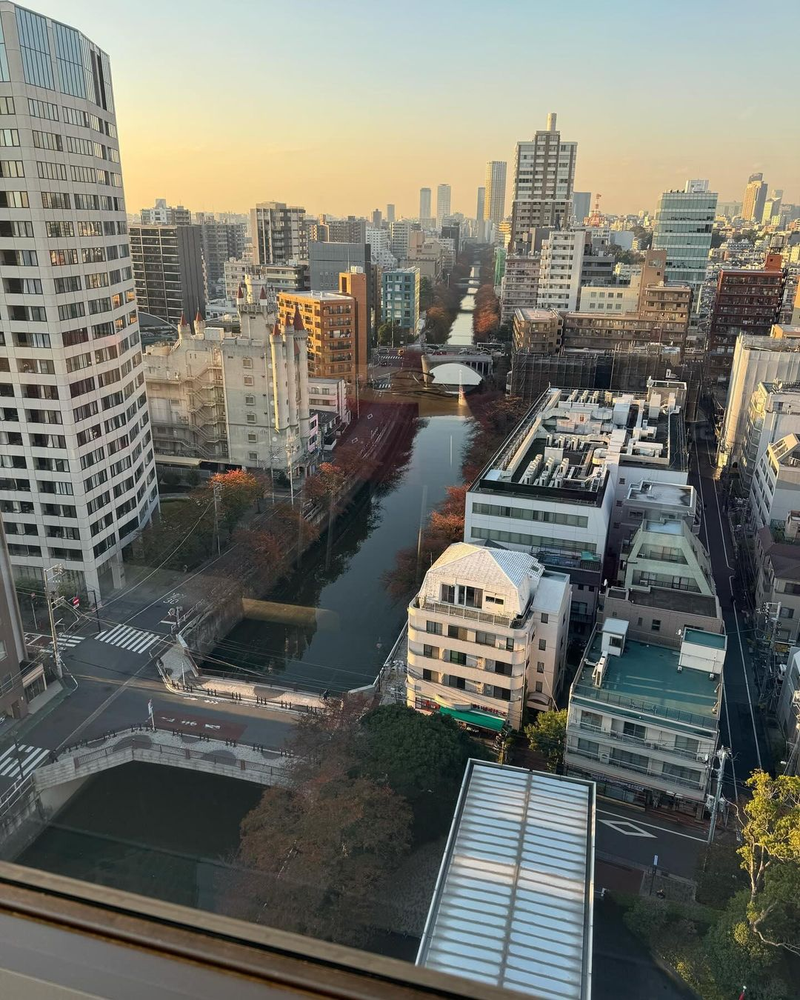

How to Have a Robustly Interesting Career in Data Science
I have been a data scientist👨💻 ever since around the time HBR popularized the term in its job sexiness article. My run started out of necessity, since back then it was very difficult to get a job when you were an Econ graduate with an eclectic mix of skills in statistics and programming; suddenly it became one of the most sought-after skill combinations on the market. It has been about a decade since. Lately, I have been asked about how to have a successful career in the field. Success is quite the subjective term, but let me try to formulate my thoughts on how to keep it interesting doing what I love in spite of external circumstances.

Objective Function As any half decent scientist would do, let us begin at the desirable end state and work backwards. I have always optimized for business impact. I relish in seeing my models bring joy to customers, efficiency to selling partners, and productivity to fellow builders. Something as simple as seeing a widget on the home screen powered by one of my models makes my day. Thankfully, my data products have consistently delivered at least double-digit millions of dollars in value (cost savings and/or top-line uplifts) annually. And this keeps me sane in the midst of all the [insert-your-hype-keyword] FOMO. The key is to find an objective function that really matters to you, and not fall for the vanity metrics. For instance, I have written some research papers and did some fun open source projects, but a lot of these feel too abstract to quantify. If I were to try to optimize for them, I would likely end up chasing after citations, Github stars, or other arbitrary numbers. I would overfit them and the activities of writing papers and contributing to open source projects themselves would become secondary to the vanity metrics. This will not be the case if writing great research papers is something that really matters to you. You need to find an objective function that correlates almost perfectly with the joy you experience as a scientist.
Build with Stakes As you move to fulfill your objectives, it is important that you do so by building concrete products with high enough stakes. I strongly believe this is the only way to level up as a scientist. The anti-thesis to this is to get stuck in the learning loop; you keep taking online courses, overfitting toy datasets, hunting for certificates, and you wonder why your career is not going anywhere while the snakeoil vendors keep buying new sports cars. It is because these learning materials when taken in excess only serve to make you feel good about yourself. Yes, you learned something new and yes, you might have built some capstone projects. But these have virtually no consequence if you fail. In fact, they are structured in a way that it is more difficult for you to fail. You stop thinking for yourself and just enjoy the pseudo-intellectual force feeding. It comes as no surprise that you need to think for yourself to grow as a scientist. The stakes do not have to be monetary. It can be anything that matters if you fail to complete your tasks. Enter a competition that evaluates scientific prowess (avoid slide show contests), create an open source project that helps with your hobbies, or most likely propose a project at work that affects your compensation/promotion evaluation. Conduct experiments, write production codes, and document everything either as technical reports or research papers. Hold yourself to the highest standards.
Find The Right Party The most important person in your career is your mentor. Ideally, you want to find the person whose objective function aligns well with yours and have a clear track records of building with stakes. At different stages, you might have more than one for different aspects such as one for business and another for research, or for different perspectives. But if I were to be honest, you would be extremely lucky to find one at all. Your mentor should not only be the person you aspire to be, but also someone you think you would have a chance to overcome in a fair fight one day. Once you have found such person, you would usually be surrounded by good company. Humans are social animals and no matter how hard you try to follow your objective function and hold yourself to the highest standards, it will be almost impossible without people with similar mentality by your side. This is the most luck-dependent component. Be grateful if you can find the right party and be the party people would like to join one day.
Integrity Every action has a price. We are in a privileged position to have a skillset that often determines the outcome of the business and rarely people question. You could gain a small but decisive advantage almost scotch-free; keep randomizing the seeds in validation splits and/or model initialization to get a marginally good result in offline evaluation to justify a launch, slice and dice the control and treatment groups to get a statistically significant result, pick a seemingly strong model that is out-of-domain to compare with your specifically finetuned model and call your model SoTA, the list goes on. But you should never do any of this, not only because you are a good person who does not want to lose sleep, but because you will eventually pay the price. I can guarantee there is always a price. Any useful scientist will call you out on any of the examples I gave; if not, time and repeated online experiments will expose your fudging of the numbers. Your choice is to keep job hopping before this happens and keep the career Ponzi scheme alive. Or simply be an honest scientist, enjoys the scientific process, learns from your mistakes, and grow.
Side Quests Whatever you do, there is always a room for side quests. Your main quest is to satisfy your objective function, but as any good optimization method, exploration is needed to ensure a robust solution. A side quest is an excuse to try the new technology you have been raring to get your hands on, a low-stake confidence builder, and most importantly a great way to remind us how much we love the craft. These are things I hold closest to my heart as I navigate the fast-paced, uncertainty-filled landscape of data science. I have conducted a few dozens of model validation experiments and each one is never less anxiety-inducing than the last. We are in the business of results and results can be brutal. In these turbulent economic conditions, I hope these templates can be useful to you as much as they were to me in surviving some unpleasant situations that may be beyond our control and continuing to do the things we love.
Be safe from scammers and snakeoil vendors. And I will see you around.